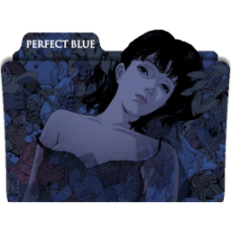
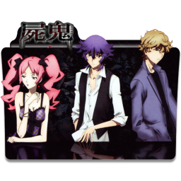
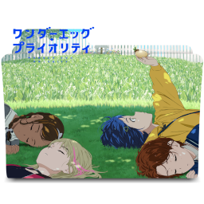

Stone Wars se apoia na premissa de "quem vai conquistar esse mundo de pedra?". De um lado, Senku quer reconstruir a civilização tecnológica, e trazer de volta todos os humanos sem exceções. Do outro, Tsukasa quer criar um mundo "puro", trazendo de volta apenas os jovens que no mundo antigo eram oprimidos por pessoas com mais poder
Amagi Brilliant Park
Seiya foi forçado a aceitar um convite para um parque de diversões com a garota misteriosa e bela Isuzu. O que ele não sabia era que ela iria levá-lo para o Parque Brilliant decrépito Amagi, parque de diversões mais decepcionante do Japão. Seiya é introduzido para o líder do Parque, a “princesa real” Latifah, que de repente lhe confia salvar o parque, que está em perigo de ser encerrado. Amagi Parque Brilliant, ao que parece, não é qualquer parque de diversões, mas sim um povoado por fadas
musaigen no phantom world
A história se passa em um futuro próximo, em que os phantoms, criaturas monstruosas, apareceram no mundo. Phantom é um termo que abrange fantasmas, youkais, monstros e outros seres sobrenaturais.
KAGUYA-SAMA: LOVE IS WAR
Shinomiya Kaguya e Miyuki Shirogane são membros do Conselho Estudantil da Academia Shuchi'in. Os dois sendo gênios entre os gênios. O tempo que eles passam juntos acabou fazendo com que se apaixonassem, mas o orgulho deles não vai permitir eles se confessem e se tornem submissos no relacionamento!

Perfect Blue
Mima Kirigoe é uma cantora pop de uma banda CHAM!, mas decide se tornar uma atriz, tendo como primeiro projeto uma série de crime dramática. Muitos de seus fãs ficam chateados com sua decisão e uns deles, obcecado por Mima, começa a perseguí-la e a enviar mensagens a chamando de traidora.
Steins;Gate
Steins Gate é um anime de viagem no tempo (já começa errado) de 2011. O anime tem 24 episódios (+1 bônus) e é focado em um cara completamente doido chamado Okarin. Ele está uma palestra, vê uma garota morta, recebe uma mensagem, sente uma vertigem e, logo ele está em outra linha temporal onde a garota está viva.
shingeki no kyojin
Para escapar dos titãs, gigantes devoradores de homens, a humanidade se refugiou em cidades cercadas por enormes muralhas. Quando eles voltam a atacar, Eren Yeager se junta à luta para combater as criaturas.
That Time I Got Reincarnated as a Slime
Depois de ser morto por um ladrão que fugia, um rapaz normal de 37 anos se encontra reencarnado em um outro mundo com slime cego com habilidades únicas

Shiki
A história se passa em um verão particularmente quente nos anos noventa, em uma vila pequena e tranquila chamada Sotoba. Uma série de mortes misteriosas começa a se espalhar na aldeia, ao mesmo tempo quando uma família se muda para a mansão estranha Kanemasa há muito tempo abandonada.
angels of death
Uma garota de 13 anos e um homem com faixas enroladas pelo corpo se encontram presos no porão de um edifício, mas sem ideia do motivo que os levaram até lá. Entre conversas, descobertas e lutas, eles criam um forte e estranho vínculo que faz com que eles trabalhem juntos para descobrir uma saída.

wonder egg priority
Liderada por uma voz misteriosa durante um passeio noturno, Ai Ohto, uma garota de 14 anos, encontra um ovo. A voz a persuade: “Se você quer mudar o futuro, só precisa escolher agora. Acredite em si mesma e quebre o ovo“. O que espera Ai após a quebra do ovo?
Kyoukai No Kanata
Kyoukai no Kanata conta a história de um garoto chamado Akihito Kanbara, que na verdade é meio humano e meio “Youmu”, uma criatura que consegue se curar rapidamente de feridas e machucados. Em um novo ano letivo, Akihito conhece Mirai Kuriyama, uma garota que tenta se suicidar pulando do telhado do colégio
One Piece
(Episódio 331)
One Piece segue a história de um grupo de piratas liderado por Monkey D. Luffy. O garoto, que possui um corpo elástico, pretende se tornar o Rei dos Piratas e para isso deve encontrar o One pPiece, tesouro misterioso capaz de torná-lo imbatível, segundo as lendas
SPY x FAMILY
Spy × Family é uma série japonesa de mangá shōnen escrita e ilustrada por Tatsuya Endo. A história segue a vida de Twilight, um espião que precisa "formar uma família" de forma repentina para executar uma missão.
Higurashi no Naku Koro ni
Keiichi Maebara acabou de se mudar para uma vilazinha quieta chamada Hinamizawa no verão de 1983. Ele logo se torna bem amigo de 4 garotas, Rena Ryuuguu, Mion Sonozaki, Satoko Houjou e Rika Furude. Contudo, uma natureza sombria existe por de trás do panos, e Keiichi pode estar em maus lençóis.
Demon Slayer
Em Kimetsu no Yaiba, Tanjiro, um bondoso jovem que ganha a vida vendendo carvão descobre que sua família foi massacrada por um demônio. E, para piorar, Nezuko, sua irmã mais nova e única sobrevivente, também acabou transformada em um demônio. Arrasado com essa sombria realidade, Tanjiro decide se tornar um matador de demônios para fazer sua irmã voltar a ser humana e para destruir o demônio que matou seus entes queridos.
Aharen-san wa Hakarenai
Raidou acabou de começar o ensino médio e está disposto a fazer amigos, já que no ensino fundamental teve muitas dificuldade. Decidiu que o primeiro passo seria conversar com a garota que senta ao seu lado, mas isso pode ser mais complicado do que parece
My Hero Academia
Em My Hero Academia - Missão mundial de heróis, dentro do universo do anime que se desenrola mostrando o dia a dia dos alunos de um curso de super-heróis, o filme foge da rotina acadêmica e nessa aventura, os heróis precisarão enfrentar terroristas.
Blood c
Saya é uma garota aparentemente normal que vive com seu pai em um santuário. Durante o dia, ela vai para a escola e passa o tempo com seus amigos em um café local. Mas quando a noite cai, Saya é chamada para proteger sua cidade de monstros estranhos.
Shikimori's Not Just a Cutie
Izumi e Shikimori são namorados, mas ele vive sofrendo pequenos acidentes e se incomoda por sua namorada sempre precisar lhe ajudar
kill la kill
Ryuuko Matoi é uma garota que viaja pelo mundo com uma espada que tem o formato de um dos lados de uma tesoura, com um objetivo: encontrar o portador da outra metade dessa “espada tesoura”, pois foi ele quem matou seu pai.
Code Geass
Lelouch Lamperouge é um jovem estudante que vive em um Império denominado Britannia. No ano de 2010 do calendário imperial, a Britannia declarou guerra ao Japão, que acabou derrotado. Com isso, o país perdeu a sua liberdade, seus direitos e até mesmo o seu nome, passando a ser chamado de Área Eleven
Mob Psycho 100
A história desenrola-se à volta de “Mob”, um jovem que explodirá se a sua capacidade emocional chegar aos 100%. Este jovem com poderes psíquicos ganhou o apelido de “Mob” pois ele não se destaca entre as outras pessoas, por isso seu nome, o qual contém várias traduções.
Bleach
Kurosaki Ichigo é um garoto de 15 anos que pode ver, tocar e falar com espíritos de pessoas mortas. Até que um dia ele encontra Kuchiki Rukia, uma Shinigami (deus da morte), e descobre posteriormente que também é um Shinigami. Agora, com seus poderes, ele terá que proteger sua cidade de forças do mal.
Fate stay night
A história se passa na cidade japonesa Fuyuki, onde de tempos em tempos acontece secretamente uma grande guerra entre magos e seus Servos (espíritos de heróis do passado) pela posse do Cálice Sagrado (Santo Graal), objeto que tem o poder de realizar um desejo de seu Mestre.
(2 temporada)
Princess Connect! Re: Dive
No continente de Astraea, um homem cai do céu sem nenhuma memória além de seu próprio nome. Uma garota elfa chamada Kokkoro aparece diante dele como sua guia neste mundo que eles estão prestes a explorar
Nisekoi
Nisekoi conta a história do estudante do ensino médio, Raku Ichijou, filho de um líder da facção yakuza Shuei-Gumi, e Chitoge Kirisaki, a filha de um chefe de uma gangue rival conhecida como Colmeia. Eles inesperadamente se encontram quando Chitoge pula de um muro e dá uma joelhada no rosto de Raku.
Aku no Hana
A história acompanha Takao Kasuga, um amante de livros complexos, cujo livro favorito é As Flores do Mal (Les Fleurs du Mal) de Charles Baudelaire, de onde a série retira seu nome. Um dia depois da escola, ele impulsivamente rouba as roupas de ginástica de Nanako Saeki, a colega de classe de quem ele gosta.
Fena: Pirate Princess
A história acompanha Fena, uma órfã que não lembra de muitas coisas da sua infância. Ela é criada em um bordel como uma prostituta, mas decide fugir. Com a ajuda de alguns amigos ela se refugia na Ilha Goblin e descobre um mistério acerca da vida de seu pai e consequentemente de sua própria vida.
86 EIGHTY-SIX
Eighty Six: Com o súbito ataque do exercito do império inimigo, a Republica dos 85 distritos foi forçada a tomar atitudes e desenvolver armas capazes de lutar contras os Legions, veículos militares não tripulados que foram enviados para atacar o país.
The Case Study of Vanitas
um vampiro conhecido como Vanitas, odiado pela sua própria espécie por ter nascido sob uma lua cheia azul, já que a maioria nasce na noite de uma lua vermelha. Temeroso e sozinho, ele criou o “Livro de Vanitas”, um grimório amaldiçoado que um dia se vingaria de todos os vampiros
Serial Experiments Lain
A série se foca em Lain Iwakura, uma adolescente japonesa moradora dos subúrbios, e sua introdução à Wired, uma rede de comunicação global similar à internet. Lain mora com sua família de classe-média, que consiste em sua inexpressiva irmã mais velha Mika, sua fria mãe, e seu pai obcecado por computadores.
Noragami
Yato é um deus menor, cujo sonho é ter um santuário e muitos seguidores para adorá-lo. Entretanto, ele é um deus quase desconhecido, e sua única parceira que o ajudava a realizar os desejos dos humanos decide deixá-lo e passa a ajudar outro deus.
Psycho -Pass
história se passa em um Japão futurista que se tornou forte o bastante para o isolacionismo e criou sua própria bolha auto-suficiente controlada por uma série de supercomputadores e pelo Sistema Sibila , que monitora e orienta a vida das pessoas. O Sistema de Sibila também identifica os indivíduos que constituem uma ameaça para a sociedade , aqueles com um alto coeficiente de crime , conhecido como criminosos latentes.
Gintama
Um samurai jovem e desempregado procura trabalho em uma Tóquio feudal governada por invasores alienígenas. Um mestre espadachim pede ao samurai e seus amigos para evitar que a espada amaldiçoada Benizakura caia nas mãos erradas.